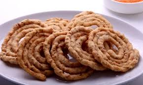

Sakinalu

Ingredients:
- Rice flour - 2 cups
- Sesame seeds - 2 tablespoons
- Cumin seeds - 1 teaspoon
- Carom seeds (ajwain) - 1 teaspoon
- Red chili powder - 1 teaspoon (adjust to taste)
- Asafoetida (hing) - a pinch
- Salt - to taste
- Oil - for deep frying
Recipe:
- In a mixing bowl, combine rice flour, sesame seeds, cumin seeds, carom seeds, red chili powder, asafoetida, and salt.
- Add water gradually and knead the mixture into a smooth dough.
- Take a small portion of the dough and roll it into a thin cylindrical shape on a greased surface.
- Heat oil in a deep frying pan.
- Take the rolled dough and make spiral shapes using your fingers or a mold.
- Carefully slide the shaped dough into the hot oil and fry until golden brown and crispy.
- Remove from the oil and drain excess oil on paper towels.
- Sakinalu are ready to serve. Enjoy them as a crunchy snack!